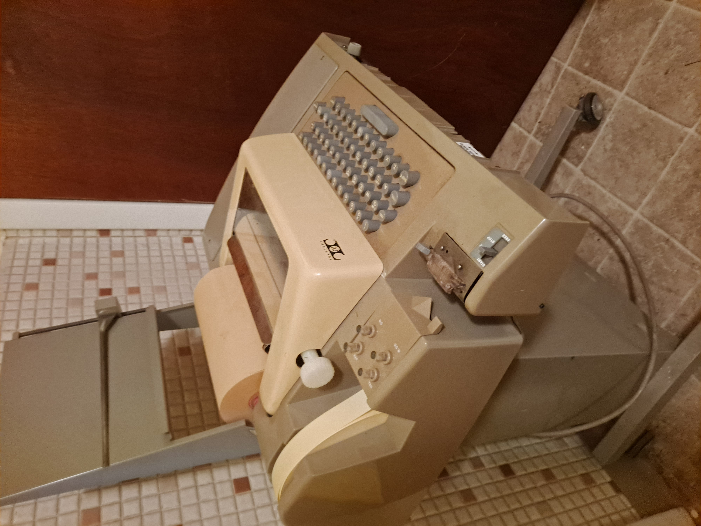
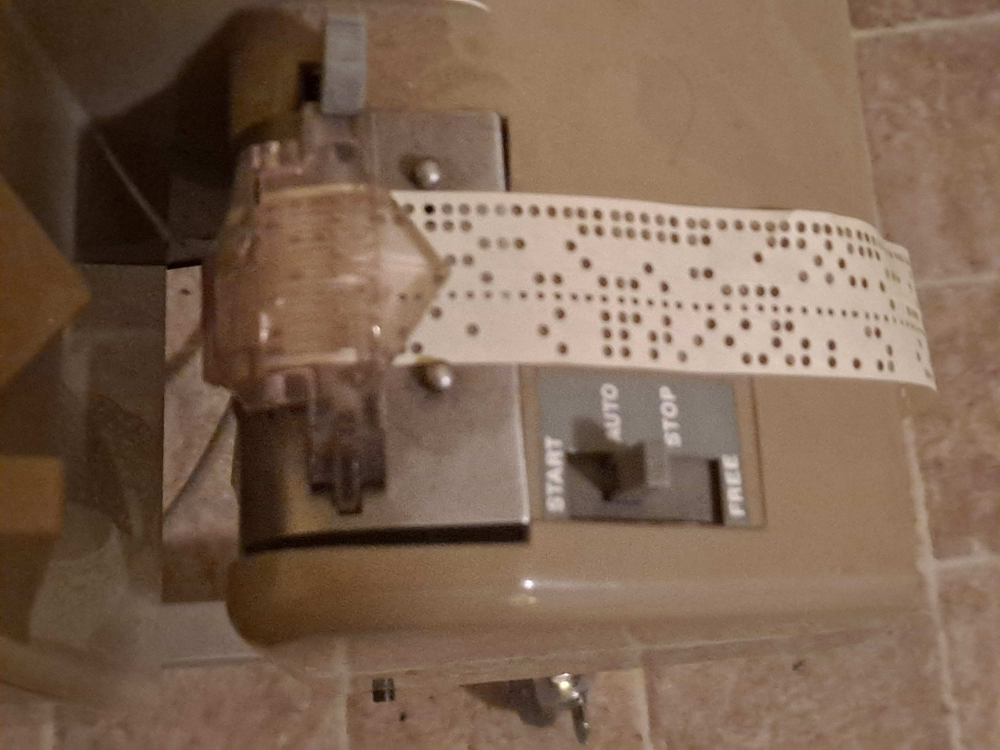
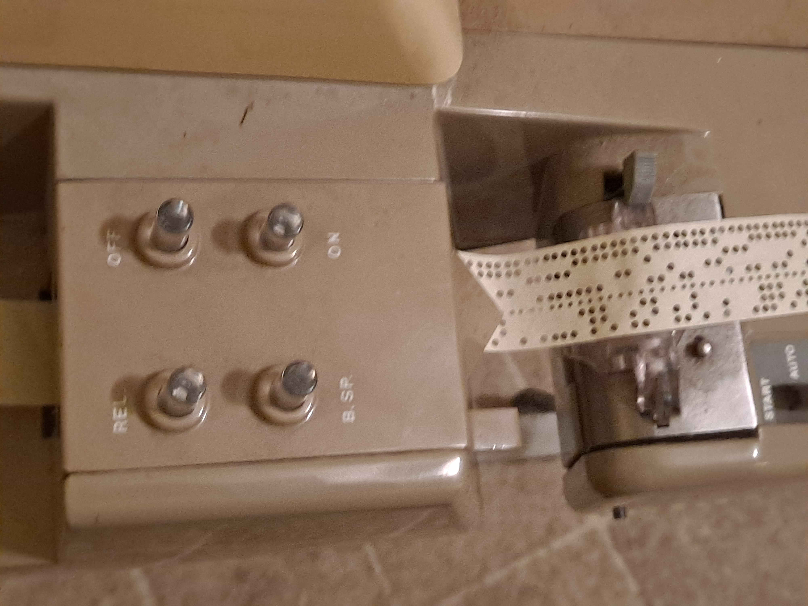

The renumber ("renumb") program is a longer example, which needs some explaining. It makes rather heavy use of SCELBAL strings, offering evidence that programs that operate within SCELBAL's restrictions (no more than 64 strings, each no longer than 80 characters and every substring within the range from one to the current length of the string) run properly and can do "practical" things. (I have to admit that SCELBAL with strings may malfunction when a user violates these restrictions; a user might expect that SCELBAL would simply print an error message and allow the user to proceed without damaging the internal state of SCELBAL; instead excessivly long or out-of-bounds strings may overwrite the machine language of SCELBAL, causing it to crash. Unlike the original SCELBAL, which had thousands of users some of whom submitted bug fixes, few users upgraded with the string suppliment, and these bugs were not noticed at the time. In the 2020s I investigated fixing these issues, as would have happened back in the day if users had noticed them, but doing so would have required extensive machine language changes. Instead, I decided to make available the version assembled by Ian Bartholomew, which has only the patches published in the 1970s, which works correctly as long as programs do not violate these restrictions.)
SCELBAL, like other BASICs of the era, often requires using GOTOs to implement control structures. (Because SCELBAL allows the results of relations like (N3=0) and (N2=0) to be combined in an expression and allows THEN to conditionally execute a statement, many of the examples need relatively few GOTOs.) Interactive debugging such program in the 1970s often required inserting new numbered lines to a program. Standard practice was to initially number lines with room for additional lines, such as increments of ten. Eventually, this gets messy. The renumber program takes an original messy SCELBAL program, and creates an equivalent program with uniform line number spacing. Doing this manually is rather time-consuming, tedious and error-prone. By 1970s standards, the renumber program is a "practical utility". It also illustrates the string techniques that could be used in larger programs, like parsers.
  Before talking about how to run this program on the simulator, let's think about how it would have operated on 1970s hardware. A typical system of the era would have been attached to a model 33 Teletype. In addition to a keyboard and a print head that typed characters on rolls of continuous-feed paper, the ASR 33 had a paper-tape punch and paper-tape reader. The paper tape features were normally turned off, but a user could push a button to turn on the punch. Doing this right after typing LIST would create a copy of the program on paper tape that could be read in later. Doing this directly in SCELBAL simply loads the identical program back into memory. The distinction with the renumber program is this paper tape is read into string INPUT statements that allow SCELBAL to transform it. Like assemblers and compilers, the renumber program needs multiple (3) passes of the same input. The first pass identifies all the targets of GOTOs and such; the second pass notes what renumbered line those correspond to; the third pass reads and reprints the statements, only changing the line numbers. The paper tape needs to be manually restarted in the reader for each pass; just before the third pass, the user turns on the punch. Because the INPUT statement echos what is typed in, the prompt is preceeded by REM (which later will cause SCELBAL to ignore the old line). The final step is to SCR the renumber program, and load the newly punched renumbered program. (Later personal computers offered disks and files so such passes happened faster without user intervention; no version of SCELBAL offered a file system.)
To run this program on the simulator, click on "load renumb", click on RUN button; type LOAD which, like all other examples, substitutes the source directly into SCELBAL. Then type RUN. There are two prompts for numbers. The first the the starting line number you want; the second is the desired increment between line numbers. These need to be under 10000. Then there will be the REM prompt for the first line of pass 1. Type LOAD again (assuming you want to renumber the renumber program; if not pause the simulator and choose a different program). When pass 1 completes, you will get another REM prompt for pass 2. Type LOAD a second time (which is like starting the paper tape a second time). Finally, type LOAD for pass 3. Then stop the simulator and use your browser to search for "*****" which was printed at the start of pass 3. Copy and paste the output from that point until the END statement at the bottom (this is like punching the new paper tape). Paste it into the SOURCE window. Restart the simulator, do SCR, LOAD and LIST to see the renumbered program.Restrictions are: the input must be a valid SCELBAL program; there must be no more than 32 distinct target line numbers (although there is no restriction on the total number of lines in the program); the only occurance of THEN must be part of an IF (for example, PRINT 'THEN' is not allowed, although PRINT 'THE'+'N' is OK) and the last line of the program must be an unconditional END (which triggers the start of a new pass).